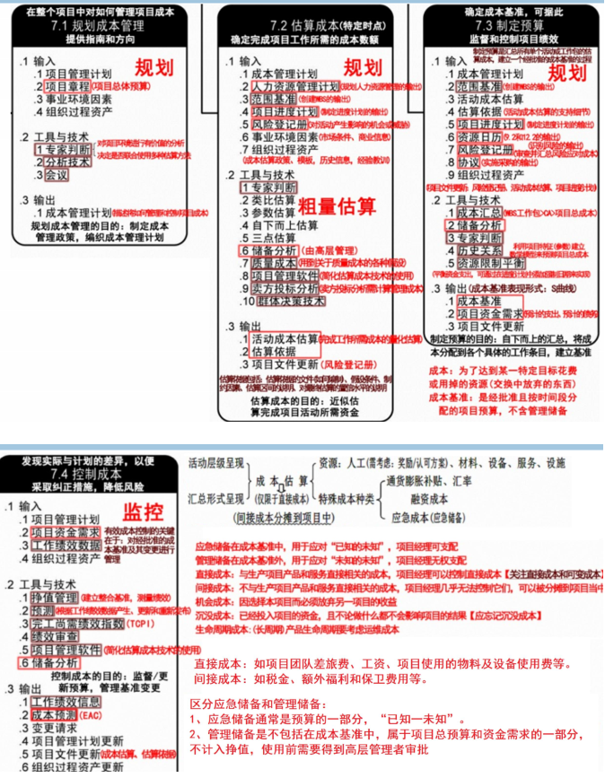
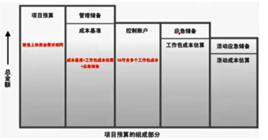
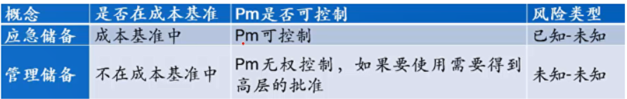

分值：3分
综合图谱

成本的类型
- 可变成本：变动成本，随生产量、工作量或时间而变化
- 固定成本：不变化的非重复成本
- 直接成本：直接归属项目工作的成本，项目经理可控制
- 差旅费，工资、设备使用费
- 间接成本：来自一般管理费用或几个项目共同担负的项目成本
- 税金、额外福利等
- 机会成本：泛指一切在做出选择之后其中一个最大的损失
- 沉没成本：由于过去的决策已经发生的成本，不能由现在或将来的决策改变
成本管理计划的内容
- 计量单位
- 精确度
- 准确度
- 组织程序链接
- 控制临界值
- 绩效测量规则
- 报告格式
- 过程描述
- 其他细节
成本估算的步骤
- 识别分析成本的构成科目，输出
- 资源需求
- 会计科目表
- 项目资源矩阵
- 根据已识别的成本构成科目，估算每一科目的成本大小
- 分析成本估算结果，找出可以相互替代的成本，协调各成本之间的比例关系
制定成本预算
原则
- 项目成本预算要以项目需求为基础。
- 项目成本预算要与项目目标相联系，必须同时考虑项目质量目标和进度目标。
- 项目成本预算要切实可行。
- 项目成本预算应当留有弹性
步骤
- 将项目总成本分摊到项目工作分解结构的各个工作包．分解按照自顶向下，根据占用资源数量多少而设置不同的分解权重
- 将各个工作包成本再分配到该工作包所包含的各项适动上
- 确定各项成本预算支出的时间计划及项目成本预算计划
成本预算的组成
- 管理储备（挣值BAC预算的话，不包括此部分）
- 成本基准
- 控制账户
- 应急储备
- 工作包成本估算
- 活动应急储备
- 活动成本储备
- 控制账户

成本基准
经过批准的，按时间段分配的项目预算，只有通过正式的变更程序才能修改
- 应急储备：包含在成本基准里，使用前不需要得到高层管理者的审批
- 管理储备：不包含在成本基准里，但属于项目总预算和资金需求的一部分，使用前需要得到高层管理者的审批

成本控制（工作包为单位）
成本控制是项目管理的重要活动，不只是个人的活动
- 对造成成本基准变更的因素施加影响·
- 确保所有变更请求都得到及时处理。
- 当变更实际发生时，管理这些变更·
- 确保成本支出不超过批准的资金限额，既不超出按时段、按WBS组件、按活动分配的限额，也不超出项目总限额
- 监督成本绩效，找出并分析与成本基准间的偏差。
- 对照资金支出，监督工作绩效。
- 防止在成本或资源使用报告中出现未经批准的变更。
- 向有关干系人报告所有经批准的变更及其相关成本。
- 设法把预期的成本超支控制在可接受的范围内。
成本分析技术
- 技术分析
- 回收期，投资回报率，内部报酬率，现金流贴现，净现值
- 专家判断：基于历史信息提供有价值的见解
- 会议
- 类比估算：粗略的估算方法，成本低，耗时短，准确性低
- 参数估算：基于参数模型和基础数据的可靠性
- 自下而上估算：准确性取决于工作包的规模和复杂程度
- 三点估算
- 储备分析
- 质量成本COQ
- 项目管理软件
- 卖方投标分析
- 群体决策技术
- 头脑风暴，德尔菲技术，名义小组
成本管理技术
- 成本汇总，自下而上汇总，最终得到总成本
- 储备分析
- 历史关系
- 资金限制平衡
- 挣值管理：把范围、进度、资源绩效综合考虑（参考挣值分析计算）
- 完工预测
- 完工尚需绩效指数TCPI
- 绩效审查
- 项目管理软件